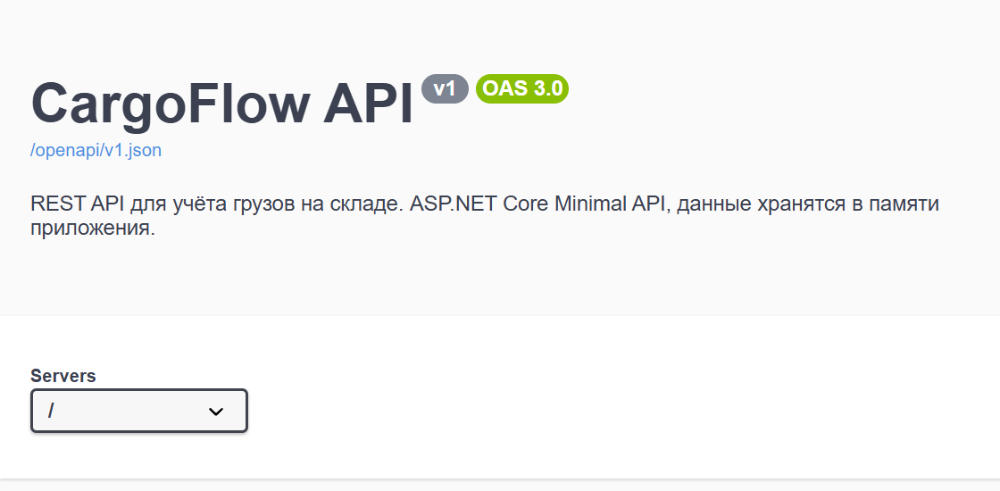
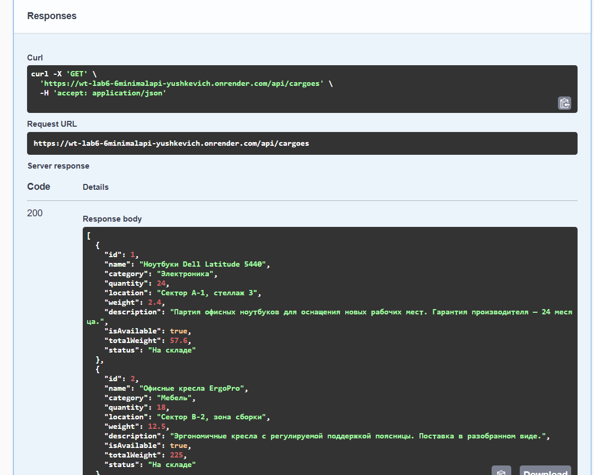
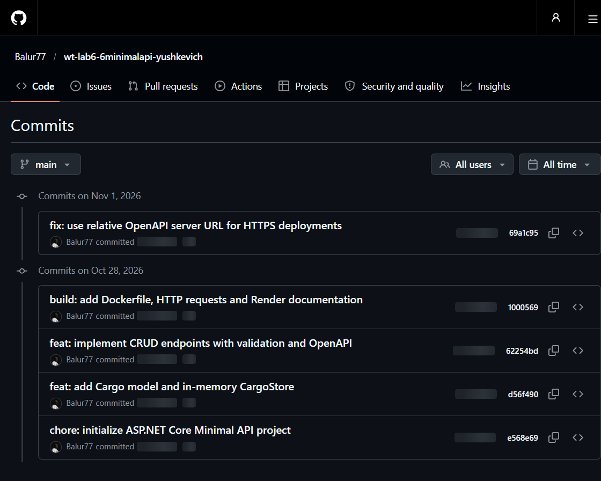

Цель работы — освоить разработку REST API с использованием ASP.NET Core Minimal API: маршрутизацию, передачу данных в JSON, параметры маршрута и query-параметры, корректные HTTP-статусы, описание API через OpenAPI, сборку в Docker и публикацию на Render.
Cargo из WT-4/WT-5.GET, POST, PUT, DELETE.| Проект | wt-lab6-6minimalapi-yushkevich |
| Предметная область | Склад и логистика, основная сущность — Cargo |
| Стек | .NET 9, ASP.NET Core Minimal API, System.Text.Json |
| Хранение | Коллекция List<Cargo> в статическом классе CargoStore |
| Документация | /openapi/v1.json, /swagger, /scalar/v1 |
| Контейнер | Docker, многоэтапная сборка, порт из переменной PORT |
| Публикация | Render Web Service (Runtime: Docker), статус Live |
| Репозиторий | github.com/Balur77/wt-lab6-6minimalapi-yushkevich |
| Публичный URL | wt-lab6-6minimalapi-yushkevich.onrender.com |
GET /, GET /api/info, GET /api/cargoes,
GET /api/cargoes/1, /swagger и /openapi/v1.json
отвечают кодом HTTP 200. Полный цикл CRUD выполнен и локально, и на Render.
CargoFlow автоматизирует базовый учёт грузов на складе. Предметная область
и основная сущность Cargo перенесены из лабораторных работ WT-4 (MVC)
и WT-5 (Razor Pages), поэтому API продолжает уже выбранный домен.
| Свойство | Тип | Назначение |
|---|---|---|
Id | int | Идентификатор, назначается сервером |
Name | string | Название груза |
Category | string | Категория груза |
Quantity | int | Количество единиц |
Location | string | Место хранения на складе |
Weight | decimal | Вес одной единицы, кг |
Description | string | Описание груза |
IsAvailable | bool | Признак наличия на складе |
TotalWeight | decimal | Общий вес партии, вычисляется |
Status | string | Текстовый статус, вычисляется |
public class Cargo
{
public int Id { get; set; }
[Required, StringLength(100)]
public string Name { get; set; } = string.Empty;
[Required, StringLength(60)]
public string Category { get; set; } = string.Empty;
[Range(1, 1_000_000)]
public int Quantity { get; set; } = 1;
[Required, StringLength(100)]
public string Location { get; set; } = string.Empty;
[Range(0.01, 1_000_000_000)]
public decimal Weight { get; set; }
[Required, StringLength(300)]
public string Description { get; set; } = string.Empty;
public bool IsAvailable { get; set; } = true;
public decimal TotalWeight => Math.Round(Weight * Quantity, 2);
public string Status => IsAvailable ? "На складе" : "Нет в наличии";
}
public static class CargoStore
{
public static object SyncRoot { get; } = new();
public static List<Cargo> Cargoes { get; } = new()
{
new Cargo
{
Id = 1,
Name = "Ноутбуки Dell Latitude 5440",
Category = "Электроника",
Quantity = 24,
Location = "Сектор A-1, стеллаж 3",
Weight = 2.4m,
Description = "Партия офисных ноутбуков...",
IsAvailable = true
},
// ... всего шесть начальных объектов
};
public static int GetNextId() =>
Cargoes.Count == 0 ? 1 : Cargoes.Max(cargo => cargo.Id) + 1;
}
GetNextId() назначает идентификатор на сервере: Max(Id) + 1.SyncRoot защищает коллекцию от одновременных изменений из параллельных HTTP-запросов.TotalWeight и Status попадают в JSON-ответ, но не принимаются из тела запроса.| Метод | URL | Назначение | Статус |
|---|---|---|---|
| GET | / | Проверка работы приложения | 200 |
| GET | /api/info | Информация о приложении | 200 |
| GET | /api/cargoes | Список грузов | 200 |
| GET | /api/cargoes/{id} | Груз по идентификатору | 200 / 404 |
| GET | /api/cargoes?search=... | Поиск и фильтрация | 200 |
| POST | /api/cargoes | Создать груз | 201 / 400 |
| PUT | /api/cargoes/{id} | Изменить груз | 200 / 400 / 404 |
| DELETE | /api/cargoes/{id} | Удалить груз | 204 / 404 |
Query-параметр search ищет по названию, категории, месту хранения и описанию
без учёта регистра. Дополнительно поддерживаются category и
available.
app.MapGet("/api/cargoes", (string? search, string? category, bool? available) =>
{
List<Cargo> snapshot;
lock (CargoStore.SyncRoot)
{
snapshot = CargoStore.Cargoes.ToList();
}
IEnumerable<Cargo> cargoes = snapshot;
if (!string.IsNullOrWhiteSpace(search))
{
var query = search.Trim();
cargoes = cargoes.Where(cargo =>
cargo.Name.Contains(query, StringComparison.OrdinalIgnoreCase) ||
cargo.Category.Contains(query, StringComparison.OrdinalIgnoreCase) ||
cargo.Location.Contains(query, StringComparison.OrdinalIgnoreCase) ||
cargo.Description.Contains(query, StringComparison.OrdinalIgnoreCase));
}
if (available is not null)
{
cargoes = cargoes.Where(cargo => cargo.IsAvailable == available);
}
return Results.Ok(cargoes.OrderBy(cargo => cargo.Id));
});
app.MapGet("/api/cargoes/{id:int}", (int id) =>
{
Cargo? cargo;
lock (CargoStore.SyncRoot)
{
cargo = CargoStore.Cargoes.FirstOrDefault(item => item.Id == id);
}
return cargo is null
? Results.NotFound()
: Results.Ok(cargo);
});
Если объект не найден, возвращается 404 Not Found; иначе — 200 OK с JSON-объектом груза.
app.MapPost("/api/cargoes", (Cargo input) =>
{
Normalize(input);
var errors = Validate(input);
if (errors.Count > 0)
{
return Results.ValidationProblem(errors);
}
lock (CargoStore.SyncRoot)
{
input.Id = CargoStore.GetNextId();
CargoStore.Cargoes.Add(input);
}
return Results.Created($"/api/cargoes/{input.Id}", input);
});
Перед сохранением выполняется Normalize(input) — обрезка пробелов —
и валидация по атрибутам DataAnnotations. Идентификатор назначается на сервере,
а заголовок Location указывает на созданный ресурс.
app.MapPut("/api/cargoes/{id:int}", (int id, Cargo input) =>
{
Normalize(input);
lock (CargoStore.SyncRoot)
{
var cargo = CargoStore.Cargoes.FirstOrDefault(item => item.Id == id);
if (cargo is null)
{
return Results.NotFound();
}
var errors = Validate(input);
if (errors.Count > 0)
{
return Results.ValidationProblem(errors);
}
cargo.Name = input.Name;
cargo.Category = input.Category;
cargo.Quantity = input.Quantity;
cargo.Location = input.Location;
cargo.Weight = input.Weight;
cargo.Description = input.Description;
cargo.IsAvailable = input.IsAvailable;
return Results.Ok(cargo);
}
});
app.MapDelete("/api/cargoes/{id:int}", (int id) =>
{
lock (CargoStore.SyncRoot)
{
var cargo = CargoStore.Cargoes.FirstOrDefault(item => item.Id == id);
if (cargo is null)
{
return Results.NotFound();
}
CargoStore.Cargoes.Remove(cargo);
}
return Results.NoContent();
});
PUT заменяет все изменяемые поля объекта и возвращает обновлённый груз
с пересчитанными TotalWeight и Status. DELETE
удаляет объект из коллекции и отвечает 204 No Content
без тела ответа.
| Ситуация | Статус | Метод Results |
|---|---|---|
| Успешный GET | 200 OK | Results.Ok(...) |
| Успешный POST | 201 Created | Results.Created(...) |
| Успешный DELETE | 204 No Content | Results.NoContent() |
| Некорректные данные | 400 Bad Request | Results.ValidationProblem(...) |
| Объект не найден | 404 Not Found | Results.NotFound() |
{
"name": "Тестовый груз",
"category": "Проверка",
"quantity": 10,
"location": "Сектор T-1",
"weight": 1.5,
"description": "Проверка CRUD.",
"isAvailable": true
}
{
"id": 7,
"name": "Тестовый груз",
"category": "Проверка",
"quantity": 10,
"location": "Сектор T-1",
"weight": 1.5,
"description": "Проверка CRUD.",
"isAvailable": true,
"totalWeight": 15.0,
"status": "На складе"
}
{
"type": "https://tools.ietf.org/html/rfc9110#section-15.5.1",
"title": "One or more validation errors occurred.",
"status": 400,
"errors": {
"Name": ["Введите название груза"],
"Quantity": ["Количество должно быть от 1 до 1 000 000"]
}
}
Минимальный API не выполняет валидацию DataAnnotations автоматически, поэтому
в проекте используется Validator.TryValidateObject. Ошибки группируются
по полям и возвращаются в формате application/problem+json.
Для успешного POST заголовок Location указывает на созданный ресурс:
/api/cargoes/7.
OpenAPI — это спецификация API в формате JSON. В .NET 9 документ генерируется автоматически по endpoint'ам и их метаданным. Swagger UI — графическая оболочка, которая читает документ и позволяет выполнять запросы.
builder.Services.AddOpenApi(options =>
{
options.AddDocumentTransformer((document, _, _) =>
{
document.Info = new OpenApiInfo
{
Title = "CargoFlow API",
Version = "v1",
Description = "REST API для учёта грузов на складе."
};
// Относительный адрес сервера: Swagger UI обращается к тому же
// протоколу и хосту, на котором открыта документация.
document.Servers = new List<OpenApiServer>
{
new() { Url = "/" }
};
return Task.CompletedTask;
});
});
app.MapOpenApi(); // /openapi/v1.json
app.UseSwaggerUI(options =>
{
options.RoutePrefix = "swagger"; // /swagger
options.SwaggerEndpoint("/openapi/v1.json", "CargoFlow API v1");
});
Документ содержит пути, параметры маршрута и query-параметры, тела запросов,
ответы 200/201/204/400/404 и схемы Cargo и
HttpValidationProblemDetails. Метаданные задаются методами
WithSummary, WithDescription, Accepts,
Produces и ProducesValidationProblem.
Дополнительно подключён Scalar UI: /scalar/v1.

/
Полный цикл CRUD выполнен локально, в Docker-контейнере и на публичном адресе Render.
На рисунке 2 показан реальный ответ 200 OK на
GET /api/cargoes, полученный через Swagger UI.

| Запрос | Результат | Проверка |
|---|---|---|
GET /api/cargoes | 200, 6 объектов | Список и вычисляемые поля |
GET /api/cargoes/1 | 200 | Объект по идентификатору |
GET /api/cargoes/999 | 404 | Несуществующий объект |
GET /api/cargoes?search=ноут | 200, 1 объект | Поиск без учёта регистра |
POST /api/cargoes | 201, id = 7 | Создание, заголовок Location |
POST с пустыми полями | 400 | Валидация и problem+json |
PUT /api/cargoes/7 | 200 | Обновление и пересчёт TotalWeight |
PUT /api/cargoes/999 | 404 | Изменение несуществующего объекта |
DELETE /api/cargoes/7 | 204 | Удаление без тела ответа |
GET /api/cargoes/7 после DELETE | 404 | Состояние коллекции изменилось |
Локальный лог запросов и ответов сохранён в docs/api-testing.md.
Публичная проверка CRUD на Render: POST — 201, PUT — 200,
GET — 200, DELETE — 204, повторный GET — 404,
POST с пустыми полями — 400.
Используется многоэтапная сборка: SDK-образ нужен только для restore и publish,
а в итоговый runtime-образ попадают лишь опубликованные файлы. Приложение слушает
0.0.0.0 и читает порт из переменной окружения PORT.
FROM mcr.microsoft.com/dotnet/sdk:9.0 AS build
WORKDIR /src
COPY wt-lab6-6minimalapi-yushkevich.csproj ./
RUN dotnet restore
COPY . .
RUN dotnet publish wt-lab6-6minimalapi-yushkevich.csproj \
-c Release \
-o /app/publish \
/p:UseAppHost=false
FROM mcr.microsoft.com/dotnet/aspnet:9.0 AS final
WORKDIR /app
COPY --from=build /app/publish .
ENV ASPNETCORE_URLS=http://0.0.0.0:10000
ENV PORT=10000
EXPOSE 10000
ENTRYPOINT ["dotnet", "wt-lab6-6minimalapi-yushkevich.dll"]
$ docker build -t wt-lab6-6minimalapi . #14 [build 4/6] RUN dotnet restore #14 Restored /src/wt-lab6-6minimalapi-yushkevich.csproj #16 [build 6/6] RUN dotnet publish ... #16 wt-lab6-6minimalapi-yushkevich -> /app/publish/ #18 naming to docker.io/library/wt-lab6-6minimalapi:latest done $ docker run --rm -p 10000:10000 wt-lab6-6minimalapi info: Now listening on: http://0.0.0.0:10000 info: Hosting environment: Production $ curl -i http://localhost:10000/api/cargoes HTTP/1.1 200 OK Content-Type: application/json; charset=utf-8
Production. Внутри контейнера проверены /,
/api/cargoes, /swagger и /openapi/v1.json.
Полный CRUD в контейнере также отработал: 201 → 200 → 204 → 404.
Проект размещён в репозитории github.com/Balur77/wt-lab6-6minimalapi-yushkevich. История содержит пять осмысленных коммитов: инициализация проекта, модель и хранилище, CRUD с OpenAPI, Docker и документация, а также исправление OpenAPI для HTTPS.

| Сервис | wt-lab6-6minimalapi-yushkevich |
| Тип | Web Service, Runtime: Docker, ветка main |
| Dockerfile | ./Dockerfile |
| Статус | Live — публичные endpoint'ы отвечают 200 |
| Публичный URL | https://wt-lab6-6minimalapi-yushkevich.onrender.com |
| Документация | /swagger, /scalar/v1 |
69a1c95
(fix: use relative OpenAPI server URL for HTTPS deployments) Render
автоматически пересобрал контейнер. В публичном OpenAPI-документе адрес сервера
стал относительным (/), после чего Swagger UI на HTTPS успешно
выполнил GET /api/cargoes и получил 200 OK (рис. 2).
В ходе лабораторной работы разработан и опубликован REST API для учёта грузов на складе. Приложение реализовано на ASP.NET Core Minimal API, работает с JSON, поддерживает полный набор CRUD-операций и использует корректные HTTP-статусы.
MapGet, MapPost, MapPut, MapDelete.Results.Ok, Results.Created, Results.NoContent, Results.NotFound и Results.ValidationProblem.400 Bad Request.
Данные хранятся в памяти процесса, поэтому после перезапуска приложения и нового
deployment на Render коллекция восстанавливается из начального набора. Несколько
экземпляров приложения не разделяют данные между собой. Для перехода к постоянному
хранению потребуется заменить CargoStore на слой доступа к PostgreSQL
(например, Entity Framework Core), добавить строку подключения и миграции.